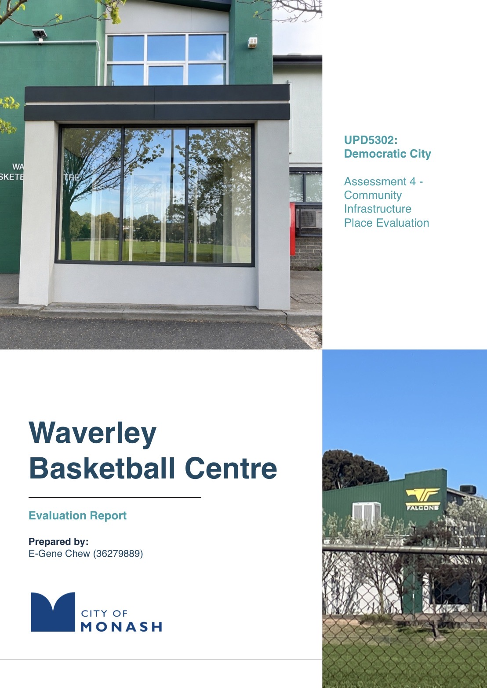

Untitled project
Add a short description of this piece of academic work.
Student Portfolio
A collection of selected projects, reflections, and constructive feedback.
01
Add a short description of this piece of academic work.

Download PDF
Add a short description of this piece of academic work.
Add a short description of this piece of academic work.
02
“An excellent, professionally presented report with a clear structure, effective layout and concise, accessible writing. Your executive summary was particularly well written, clearly communicating the key findings and recommendations so that readers could quickly understand the main messages of the report. The purpose of the evaluation was also clearly articulated, providing a strong foundation for the subsequent analysis. Your spatial and urban context analysis was a particular strength. I appreciated the excellent use of maps to explain the facility's broader geographical setting, particularly its relationship to the surrounding network of community facilities and other important destinations. This provided a clear understanding of the facility's role within the wider community. The inclusion of a demographic profile was also useful in establishing the characteristics of the population the facility serves. One minor refinement would be to include additional labels on some of the broader context maps, such as street names and key destinations, as you did effectively on the local context map. The resolution of a few images could also have been improved to ensure consistent visual quality throughout the report. It was excellent to see you position the facility in relation to several relevant Council strategies, demonstrating a good understanding of its strategic role and the objectives it is intended to support. I also appreciated your observational insights into how people arrived at the facility, particularly your identification of the dominance of car-based travel and the implications this has for accessibility. Your final recommendations were a highlight of the report. They were clear, practical and well structured, identifying both proposed actions and the outcomes they were intended to achieve. I particularly liked your suggestions to improve connections and the surrounding public realm, as well as creating more opportunities for informal basketball shooting. These demonstrated an appreciation of how relatively targeted changes to access, design and opportunities for casual use could improve the facility's contribution to community life. Overall, an excellent professional report that brought together strong spatial analysis, relevant policy context, site observations and thoughtful, actionable recommendations. Very well done.”
Suzanne Barker
UPD5302
03
Write a brief introduction about your studies, interests, and goals.